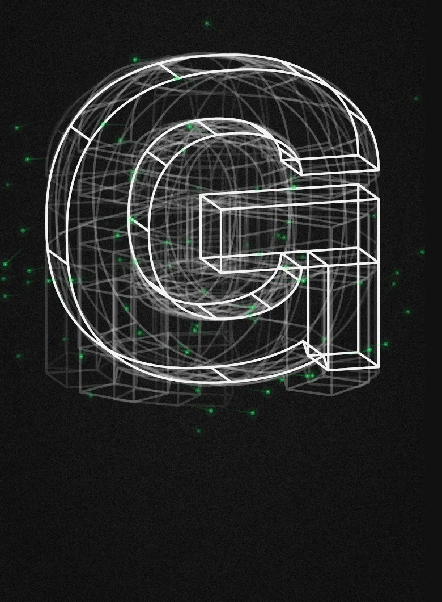
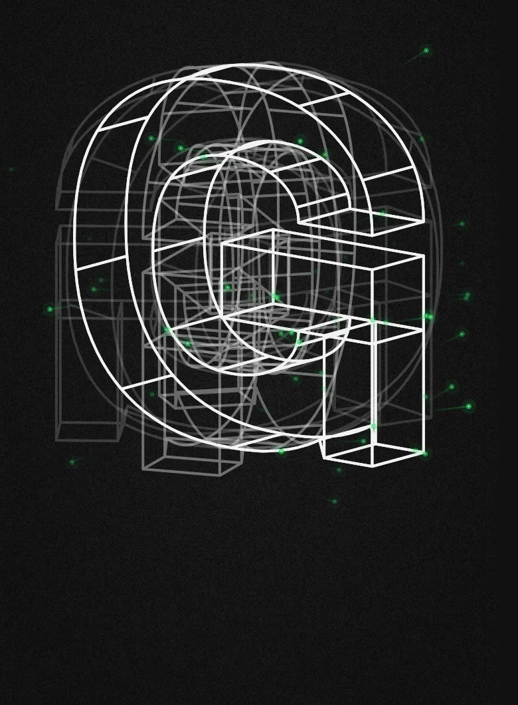
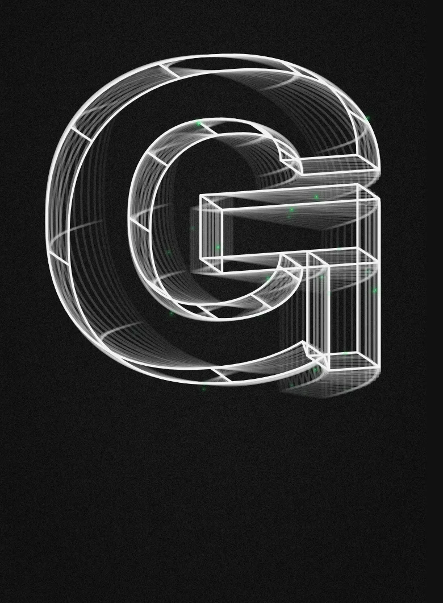
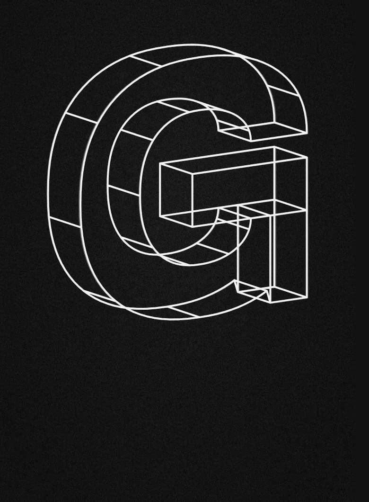
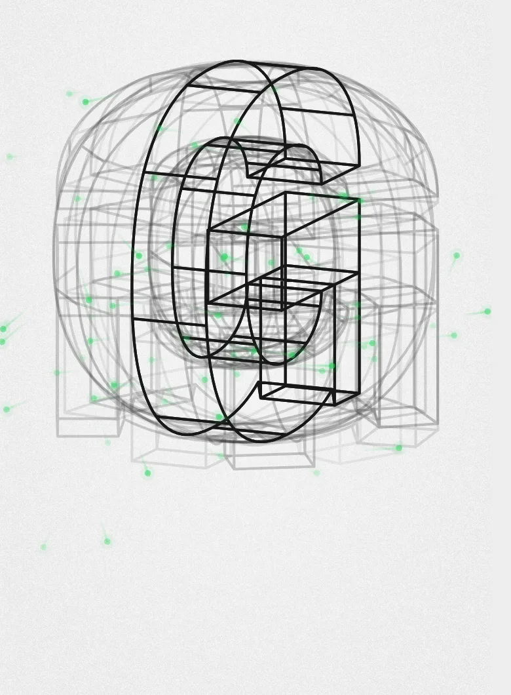
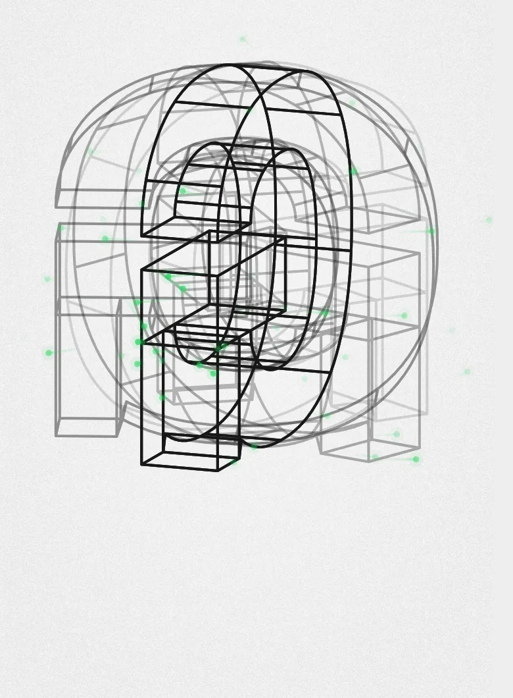
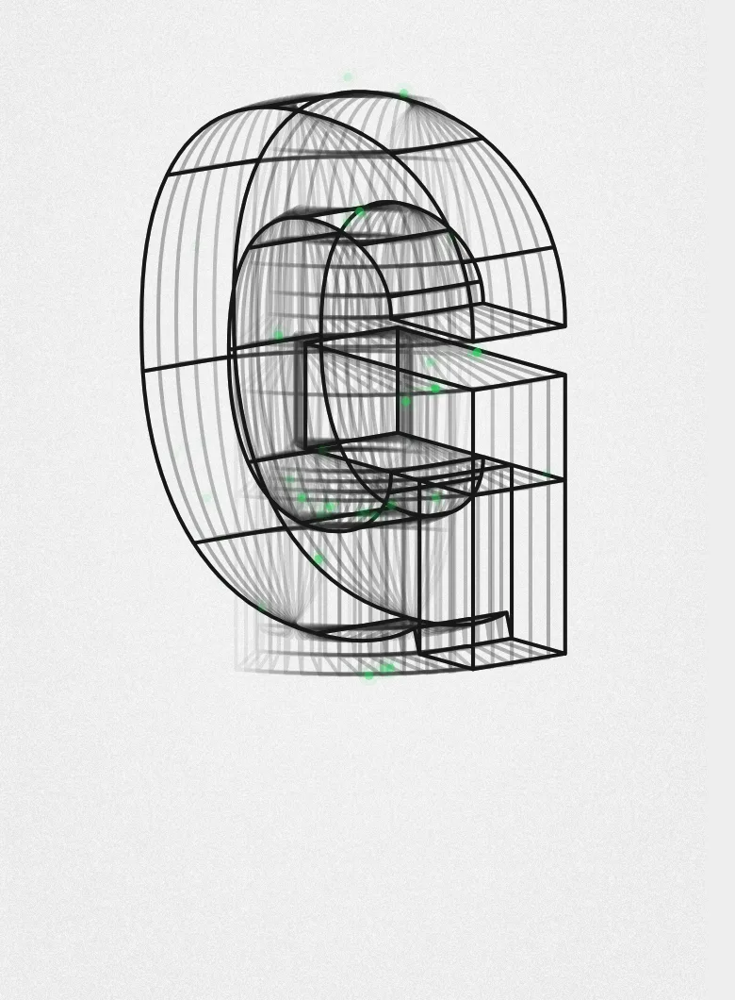
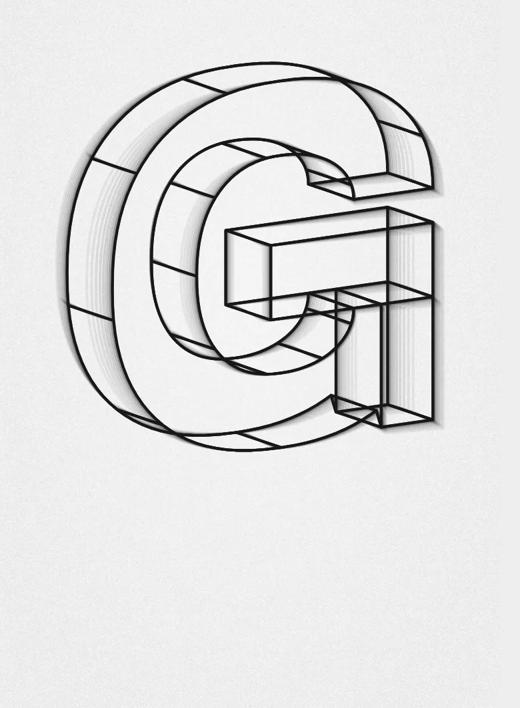

Green G — dots (mock-up)
Dot particles leave the G's wires, drift off with a bit of momentum and leave a short, faint ghost streak. No spikes, no fill. They build up with spin speed and fade out as it slows. These are rough still frames, not the real animation. Green lines #22D35A, core #E6FFE9.
Dark theme




Light theme



